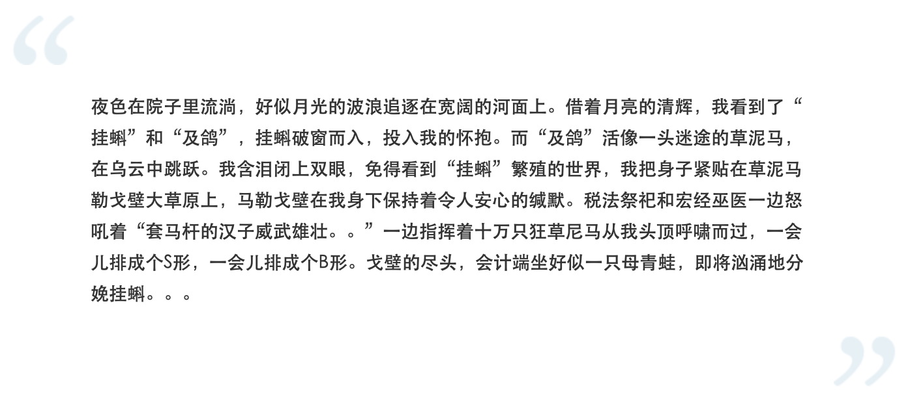

愿者上钩自打2018年11月（还是12月，想不起来了）离开上一家公司，我就蹲在家里了。这不长不短的一年里，创业两次，意识到自己是个渣男六十次，GitHub Commit 四百次，搬家两次，写的存储改名字两次，借钱五次，整理笔记一次，戒烟四百次，修订自己的论文一次，打飞机三百次，千里走单骑之赶去抽烟喝酒烫头两次。 抽烟喝酒，还有烫头“成年人的崩溃从借钱开始。”这话一定让不少人颇有感触，而我的感触可能更深刻一点。 我打小手缝就宽，留不住钱。正常情况下，无业游民这么久的我现在应该是在阴间，通过阴特网发的这篇文章。可每每我过不下去的时候，总有朋友问我最近过的怎么样，我说不咋滴，于是我就有钱了。我请求支援，就管我要卡号。我说没地方住，朋友便来北京把我接到了杭州。我说我要烫头，朋友就给我烫个头，还染了发，折腾几小时末了还请我吃饭。我说我下面痒，朋友就安慰我跟他一样阳痿就好了。 在我眼里，加倍报答他们的优先级比所谓的个人幸福要高得多。我徐某人如果这辈子没法补偿，那，那也没办法了，我死都死了。 有幸生，有幸死如果生命是一朵永不败的花，那么多么无聊啊。烈日骄阳，不会让你枯萎；风雨冰霜，不会让你凋零；哪怕上火的尿也滋不死你。 关于死亡我懒得讨论太多，对于我来说这已经不算一个问题了。 为什么不像满足的客人那样，离开生命的宴席呢？ 装比的山，逗比的路在装比的高峰上越攀越高，还是在逗比的路上越走越远？这两种行为哪一种更高贵？ 我全都要。 这一年难得有了回顾的时间，发现自己在人生道路上稳步地螺旋上升。我既发扬了逗比精神，也进一步提高了装比的姿势水平。我这里举几个逗比的例子。关于装比就无需多言了，我无时不刻不在装。 逗过的比临近期末，啥也不会 （2011-12-27）据说学校有窥阴癖出没（2012-06-06）卫生习惯不好的我遭遇连日阴雨（2013-05-09）热锅上的我（2013-05-20）螺旋上升的逗比以下内容节选自“与滴滴司机对话实录之摇钱树”（2019-03-03） 
这段实录表明了我的逗比气息已经开始具备感染力了，这是里程碑式的飞跃。 创业逍遥，打工也逍遥创业与打工最大的不同是能让我时不时有“风在背后吹，世界横在胯下”的幻觉，有些人可能从这句话里读到的是翻云覆雨的霸气，有些人则陷入了孤胆英雄的中二奇想。我曾花了不少时间去克服这种幻觉，还专门写了篇文章《天下無雙》。天下无双不过是个字眼罢了！可终究我还是会跌入它的精妙罗网之中。 创业的过程中会碰到各式各样的问题，各种各样的人，有无数的过来人聊过他们的经历和办法，核心围绕的都是如何成功。而我更关心的是创业对于我的人生，我这条命在世上走一遭来说意味着什么。或许只是我化为尘埃便随风飘散的一段记忆。更严谨一点，我比较长命活到85岁，那么我有 50%的几率患老年痴呆，然后这段记忆就与我的智力比翼双飞了。 那么创业对于我来说意义何在呢？我开始觉得这并不是一个问题，不值得我去回应它。 同样的，打工对于我来说也并不存在意义上的问题，不值得我去思索。准确的说，任何事物对于我来说都没有意义，包括生命本身，我已经不去思考生命的意义了。因为当我追寻到意义的意义的终点，结果只能发现一片虚无，这不是一个好问题，我没有理由去追寻。 知道逍遥，不知道也逍遥不少人把“逍遥”与感情淡漠划了等号——比如在让人变得成熟的抖音里就有教导人“不去爱就不会受伤”。感情淡漠的人总是保持着一副镇静的样子，但却与刚强无关，这正是他们缺乏力量的表现。有时这种镇静会有有用的一面，但因为没有积极的动机支配，就会因为缺乏动力而缺乏行动。什么也不做，便是逍遥吗？ 庄子把《逍遥游》写的很美，不管能不能弄明白庄子在说什么，光是大声朗诵（其实我读书少，读不通顺）就让人精神舒爽。想必要达到这样的效果，也是破费了一番功夫。老庄会一边琢磨文章怎么写，一边琢磨我这么苦是逍遥吗？ 在灌木丛中超低空飞行的小鸟讥笑三万英尺的距离之外的大鹏，我们讥笑小鸟不懂鸿鹄之志。但倘若小鸟不说这些闲话，是不是也算是逍遥了？子非鸟，安知鸟不乐？ 有多少人的逍遥是在用自由的绳索勒紧自己的喉咙呢？我不知道，也不想去比较。我自己是不是逍遥我也不知道，亦不想去关注。 所以我现在逍遥了吗？ |